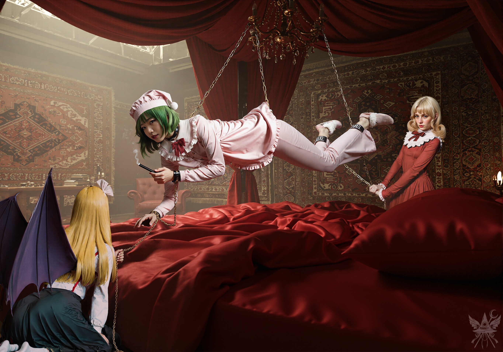

勧められたコーヒーを一口含むと、そのコクと香りの深さに思わず息をついた。まさにルイズの言う通り、極上の一杯だ。しかし、この甘美な弛緩に身を委ねている場合ではない。目的を果たすため、どのような言葉で切り出すべきか、慎重に思考を巡らせる。
（フレデリカを召喚するための強力な魔力の源、この屋敷の主なら確実に握っているはず。気まぐれで残酷な性格は厄介だけれど、今のところ客人として扱われている。思い切って交渉を持ちかける価値はあるわね）
「幽香様、一つお願いがあるのですが」
「お願い？ 構わないわ。ただし、泣き叫んでも無駄よ」
「ある儀式を行いたいのです。幻想郷では不可能なため、別の世界へ繋がる場所を探していまして……幽香様はご自身の世界をお持ちだと伺いました」
「ちょっと待って。私の美しい夢の世界で、得体の知れない真似をしようっていうの？ なんて図々しい子かしら」
幽香は狡猾に目を細めた。
「いえ、決してご迷惑をおかけするつもりは……」
「自分の用事を済ませたいだけでしょう？ ルイズから聞いているわ。ええ、場所を提供するのは構わない。ただし、一つ条件があるの」
幽香は優雅に微笑んだ。
「……とてもデリケートな問題で、私を助けてほしいのよ」
デリケートな問題。太郎の頭に被せられた袋の惨状がフラッシュバックし、思わず警戒心を剥き出しにしてしまう。
「デリケートな問題、とは……？」
「あら、こんな可愛らしい女の子に、みだらな真似をさせるとでも思ったのかしら？ 心外ね」
幽香は、膝の上で微睡むくるみの髪を優しく撫でながら続けた。
「……あなたには、静かなる軍を止める手伝いをしてもらうの。それだけよ」
「静かなる……軍？ 軍隊のことですか？」
問いかけに、エリーが二人を見やりながら口を挟む。
「地獄から湧いてきた、死んだ狂信者どものことさ。最近なぜかこの屋敷を包囲しようと嗅ぎ回っててね。今のところは私の鎌とくるみの爪で押し返してるが、日に日に数が増えてるんだ」
「そういうことよ。それで、あなたの答えは？」
（どうやら、とんでもない厄介事に巻き込まれたようね。地獄……ダンテ[1]ダンテ・アリギエーリが幻視したような場所なのだろうか）
「具体的には、何をすればいいのでしょうか？」
「連中の拠点に潜入して、仲間のふりをしてちょうだい。正体、目的、指揮官の顔、戦力の供給源……すべて洗い出して。そうすれば、私がわざわざ手を下さなくても、まとめて綺麗に掃除できるでしょう？ 要するに、この鬱陶しい羽虫どもをどうにかしてほしいの」
深紅の瞳が、こちらの底まで見透かすように細められる。
突然、破裂音が響いた。幽香の手のひらで、ワイングラスが粉々に砕け散ったのだ。燃えるような瞳を直視できず、誰もが息を呑む。食堂に落ちた静寂の中、床に散らばるガラス片の音だけが響く。だが、異様なのはその先だった。幽香の掌に深々と突き刺さった鋭利な破片が、泡立つように塞がる肉芽に押し出され、ポロポロと抜け落ちていく。溢れ出す鮮血が赤ワインと混ざり合い、手は凄惨な赤に染まっていた。だが主は、痛みなど微塵も感じていないかのように、口元に笑みすら浮かべている。
「……断るというなら、仕方ないわね。他の子を送り込むしか」
幽香の視線が、無邪気にケーキを頬張るオレンジへと向く。
（……やはり、常軌を逸しているわ。太郎の末路を考えれば当然だけど）
「分かりました。引き受けます。ただ……」
「手伝ってくれるのね！ 『ただ』なんて言葉は不要よ。ああ、奴らが今すぐにでもなだれ込んできてくれればいいのに……」
幽香は歯を食いしばり、手元の傘の柄をきしませて立ち上がった。荒い息遣いが漏れる。
「またそのご気分ですか、お嬢様？」
エリーが背後に立ち、静かに腕を支える。幽香は頷いた。
「エリー、くるみ、準備を」
血まみれの手で合図を送ると、幽香はルイズに悪戯っぽくウィンクし、耳元で何かを囁いた。ルイズは満足げに目を細める。
「皆さん、少しの間、お待ちになっててね」
そう言い残し、主は部屋を後にした。
（私に対する好意がどこまで本物か。太郎と同じ運命が待っているのではないか……）
探るように、残されたルイズとオレンジに視線を向ける。
「ねえ、オレンジちゃん。お願いがあるのだけど、いいかしら？」
コーヒーをすすりながら、ルイズが沈黙を破った。
「もちろん！ わたし、なんでもやるよ！」
目を輝かせるオレンジ。
「まずは、魔界についてどれくらい知っているか教えてくれる？」
ルイズが漆黒の小さなケーキを口に運ぶと、オレンジも釣られたように同じものを放り込んだ。
「んぐっ、なんにも知らない！ ……でも、すっごく知りたい！」
（口に物を入れたまま話すなんて、行儀の悪い子ね）
「じゃあ、あのボケ老人……シンギョクを騙してやらない？」
（なるほど、ルイズの狙いはそういうことね）
オレンジは勢いよく立ち上がり、ルイズの肩を揺すった。
「騙す！？ あのボケじじいを？ やったー！ どうすればいいの！？」
（まさか、見返りも求めずにここまで簡単に乗せられるとは……）
「ええ、乗ってくれると思っていたわ。あいつを騙すために、しばらく私の姿になってちょうだい」
オレンジの表情は、最高のご馳走を前にした時よりも輝いていた。腹を抱え、口を半開きにしてルイズを見つめる。
（どこからそんな無尽蔵のやる気が湧いてくるのかしら）
「いいこと？ 私の姿になったら、シンギョクのところへ行って『降伏』するの。そうすれば、シンギョクは私が戻ってきたと勘違いして、オレンジちゃんを魔界へ送り返すわ」
「全部わかった！ そんで、次は！？」
「次は、堕ちたる神殿にいるサリエルという大天使に、挨拶しに行ってほしいの」
「あいさつ？」
「ええ、ただ顔を見せるだけでいいわ。あとは、私が魔界に帰るまで、適当に遊んで待っていてちょうだい」
「もう……嬉しくて言葉が出ないよ！ いつ変身するの？」
「急がないで。幽香様がお呼びだから、そこで全部やってあげるわ」
（もしあの時、私が身代わりの提案を受け入れていたら、あの子と同じ道を辿っていたのね。まあ、決断した以上、後戻りはできない。オレンジの無事を祈るしかないわ）
しばらくの間、和やかな歓談が続いた。オレンジが身を乗り出してルイズに語りかけるのを横目に、メデアは豪奢な椅子に深く背中を預け、現実感を喪失しつつあった。揺らめく蝋燭の炎に視線が吸い込まれる。思考はひどく鈍り、ただこの奇妙な茶番を眺めることしかできない。
「みんなー！」
扉からくるみが顔を出した。
「幽香様の準備ができたから、早く来なさいってさ！」
言い捨てると、なぜかオレンジを非難するように睨みつける。
「そうね、行きましょうか」
ルイズが優雅に立ち上がり、オレンジも弾かれたように後に続く。メデアも重い腰を上げ、薄暗い廊下へと踏み出した。
どこまでも続くような階段を上る間、視線は足元の絨毯に固定されていた。えんじ色に沈んだ縞模様が、規則正しく格子状に交差している。くるみはとっくに最上階へ飛び去り、オレンジも階段を駆け上がっていく。メデアとルイズだけが、一定のペースで歩みを進めた。
（この屋敷の連中、一体何を企んでいるの？ 私以外の全員が、これから何が起きるか知っているような口ぶり……まさか、私を生贄にする祭壇へ案内されているわけじゃないわよね？）
一抹の不安を抱えたまま、重厚な金色の取っ手がついた両開きの扉の前へ。エリーが押し開けたその先へ、メデアたちは足を踏み入れた。
そこは、圧倒的な重圧感と官能的な空気が支配する特異な空間だった。濃厚な甘い香りと、微かな錆の匂いが混ざり合って鼻腔を突く。部屋全体を覆う豪奢な装飾よりもメデアの目を引いたのは、部屋の中央で繰り広げられている、物理法則を無視した異様な儀式のような光景だった。

鎖が擦れ合う冷たい金属音が、静寂の部屋に響く。重力から完全に解放されたかのように宙を舞う主は、四肢を繋ぎ止められながらも、一切の苦痛を感じていない。むしろ、その絶対的な拘束すらも自らを飾る遊具の一つとして楽しんでいるようだった。足元には、無惨に砕け散った時計が転がっている。
「お客さん、遠慮せずにくつろいでちょうだい」
見下ろす視線も、声色も、先ほどの食堂と何一つ変わらない。
ルイズは巨大なベッドの端に腰を下ろし、オレンジはふかふかのクッションへ飛び込んだ。メデアは入り口で立ち尽くしたままだ。
「お嬢様は、いつもこうして金に触れていると落ち着くんだよ」
メデアの困惑を見透かしたように、エリーが肩をすくめる。
「なんだい？ まさか、龍神様に血の生贄でも捧げてると思ったのかい？」
「あらエリー、お客さんをからかうのはよしなさい。雰囲気が台無しになるわ」
甘い煙の匂いが漂ってくる。宙に浮いたまま、幽香が口元に寄せた管から紫煙が漏れていた。タバコにしてはひどく重く、脳の芯を麻痺させるような香りだ。
メデアはルイズの隣に腰掛け、慎重に口を開いた。
「儀式の件ですが、任務へ向かう前に済ませてしまってもよろしいでしょうか？」
（まさに虎の尾を踏むような心地ね。機嫌を損ねれば、あの黄金の鎖が私の首に巻き付くかもしれない）
幽香はわずかに目を細め、その積極性を面白がるように微笑んだ。
「その儀式には、何が必要なの？」
「強力な魔力の源泉です。場所でも、物品でも構いません」
「物品？ 私の体を解剖されるなんてまっぴらね。たとえあの『白と赤の図太い巫女』を捕まえて、目の前で首を刎ねてくれるとしてもお断りよ。でも、場所なら……」
幽香は再びルイズへ流し目を送った。
「まあ、急ぐ必要はないわ。場所よりも、あなたの体調や心構えの方がずっと重要なのよ。……メデアちゃん、今のあなたに、本当に耐えられるのかしら？」
「ええ、できます」
「口ではそう言っても、今の状態じゃ無理ね。ちょっと待っていなさい。……待っている間、私たちの遊びに付き合ってくれる？」
言うが早いか、幽香はルイズへと視線を移した。
「ルイちゃん、お願いできるかしら」
ルイズは手元のバッグを引き寄せ、厳重に包まれたいくつかの小包を取り出した。
「これは法界銀華の結晶よ。味は保証しないけれど、未来を見通せるようになるし、視野がいろんな意味で広がるの。……ええ、こんなにも広く、ね」
陶酔したように、ルイズが深く息を吸い込む。
「ルイちゃん、そんな苦いだけの代物に意味があると思っているの？ 私なら綿の方が好きね。視野を広げるより、感覚を研ぎ澄ます方がずっと大切よ。それに、体がとっても柔軟になるから、あの高いシャンデリアにだって手が届いてしまうのよ」
その言葉に応じるように、ルイズは別の包みを開いた。中には、真綿のような不気味な塊が詰まっている。
「ねえ幽香様、あの丸いやつ、まだある？」
オレンジが期待に胸を膨らませて尋ねた。
「残念だけど、この前のが最後だったわ」
幽香は妖しく唇を歪める。
「……ルイちゃん、眼球は持ってきてくれた？」
「ええ、眼球も竹の花も仕入れてきたわ。ただ、花の方は有料よ。別の顧客に回す予定だったからね」
ルイズはそう言いながら、包みからいくつかのゼリー状の球体を取り出した。どう見ても、何かの眼球そのものだ。
（狂っている。一体、私はどんな深淵を覗き込んでいるの？）
オレンジは躊躇なく眼球を掴み取ると、口に放り込んでくちゃくちゃと咀嚼し始めた。
「花はいらない！ この『眼球』を食べると、すっごく力が湧いてくるの！ 囲碁で勝った時みたいな気分！」
「ちょっとオレンジ、またそれにハマってんの？ マジで食べすぎはヤバいっしょ」
くるみが露骨に顔をしかめる。
「わたしのこと言えるの？ くるみだって、いっつも誰か噛みつく相手を探してるくせに。……うう、殺し屋！」
「殺し屋じゃないわよ！ アタシはナッツ族のエリート吸血鬼！ 『噛みつく』んじゃなくて、ちゃんと相手の合意がないとやんないの！」
くるみの顔がさらに険しくなる。
「へえ、そうだったのかい？ 里の連中が随分と合意していたのを覚えてるがね」
エリーの容赦ない皮肉が飛ぶ。
これ以上、この狂気じみた空間に身を置くのは危険だ。ローブの下に手を滑らせ、魔導書の無事を確認しようとした指先が、別の硬い質感に触れた。
（太郎の日記……。彼、今は罪袋なんてものを被せられて酷い目に遭っている。この屋敷では日常茶飯事なのだろうか）
持ち主に返すべきだと思い出し、メデアは意を決して狂宴に割って入った。
「幽香様、地下室へ行かせていただけませんか？」
「あら、あなたもお友達に加わりたくなったの？」
「いいえ。彼は友人でもありませんし、加わる気もありません。ただ、彼の落とし物を返してあげたいだけです」
「それなら私が預かってあげるわ。あの人はもう、私の所有物になったの。血の一滴、肉の一片、魂の底から運命に至るまで、すべて私・の・も・の。だから、持ち物も当然、私のものよ」
「わたしが行くよ！」
オレンジが身を乗り出す。
「どうせ地下からは逃げられないんだし、返してあげたっていいじゃない？ その落とし物、危険なやつじゃないよね？」
「ありえないわね。大切なお客さんを、危険な目に遭わせるわけがないじゃない」
鎖が冷たい音を立てて揺れる。幽香は紫色の煙を長く吐き出し、甘く囁いた。
「それより、ルイちゃんの贈り物を、あなたも一つ試してみない？」
（なんてこと。この連中は、正気を手放すことを極上の遊戯だとでも思っているのね。私はどうするべきか……）
差し出された不気味な供物を前に、メデアは冷や汗を握りしめ、ただ立ち尽くすことしかできなかった。
（伊：Dante Alighieri、1265-1321）：中世イタリアの詩人。